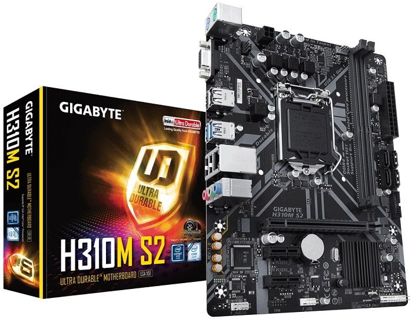

Mother Boardاسعار ال
GIGABYTE اسعار لوحات

مازر بورد GIGABYTE A320M-S2H AM4 AMD السعر : 1,000.00 جنيه مصري .
مازر بورد Gigabyte GA-A320M-DS2 AM4 AMD السعر : 1,150.00 جنيه مصري .
مازر بورد Gigabyte H310M-S2H LGA 1151 السعر : 1,200.00 جنيه مصري .
مازر بورد Gigabyte B360M H LGA 1151 السعر : 1,250.00 جنيه مصري .
مازر بورد Gigabyte GA-A320M-HD2 AM4 AMD السعر : 1,250.00 جنيه مصري .
مازر بورد Gigabyte GA-E3000N APU AMD السعر : 1,300.00 جنيه مصري .
مازر بورد Gigabyte GA-H110-D3A LGA 1151 السعر : 1,300.00 جنيه مصري .
مازر بورد Gigabyte H310M DS2 LGA 1151 السعر : 1,300.00 جنيه مصري .
مازر بورد GIGABYTE H310M H LGA 1151 (300 Series) Intel H310 HDMI SATA 6Gb/s USB 3.1 Micro ATX Intel
Motherboard السعر : 1,350.00 جنيه مصري .
مازر بورد Gigabyte B365M-H LGA 1151 السعر : 1,400.00 جنيه مصري .
مازر بورد GIGABYTE A520M DS3H mATX AM4 5+3 Phases Digital PWM, GIGABYTE Gaming GbE LAN, NVMe PCIe 3.0 x4
M.2, 3 Display Interfaces, Q-Flash Plus, RGB Fusion 2.0, Motherboard السعر : 1,550.00 جنيه مصري .
مازر بورد Gigabyte B250M-D2V LGA 1151 السعر : 1,550.00 جنيه مصري .
مازر بورد GIGABYTE B450M DS3H V2 Micro ATX Motherboard السعر : 1,550.00 جنيه مصري .
مازر بورد Gigabyte B365 DS3H LGA 1151 السعر : 1,600.00 جنيه مصري .
مازر بورد Gigabyte B450M GAMING AM4 AMD السعر : 1,600.00 جنيه مصري .
مازر بورد GIGABYTE B450M DS3H AM4 AMD السعر : 1,650.00 جنيه مصري .
مازر بورد GIGABYTE B450M S2H AM4 AMD السعر : 1,650.00 جنيه مصري .
مازر بورد GIGABYTE H410M S2H LGA 1200 Intel H410 Micro-ATX Motherboard with M.2, SATA 6Gb/s, USB 3.2 Gen 1
السعر : 1,650.00 جنيه مصري .
مازر بورد GIGABYTE B450 AORUS ELITE AM4 AMD السعر : 1,750.00 جنيه مصري .
مازر بورد GIGABYTE GA-B250-FinTech LGA 1151 السعر : 1,750.00 جنيه مصري .
مازر بورد GIGABYTE B360N WIFI LGA 1151 السعر : 1,850.00 جنيه مصري .
مازر بورد GIGABYTE B450 AORUS ELITE V2 AM4 AMD B450 SATA 6Gb/s ATX AMD Motherboard السعر : 1,850.00 جنيه
مصري .
مازر بورد Gigabyte B460M DS3H AC (LGA1200/Intel/B460/Micro ATX/M.2/SATA 6GB/s/USB 3.2 Gen 1/ HDMI/Intel
802.11ac/Motherboard) السعر : 1,899.00 جنيه مصري .
مازر بورد Gigabyte B365 M AORUS ELITE LGA 1151 السعر : 1,900.00 جنيه مصري .
مازر بورد GIGABYTE B450 AORUS M AM4 AMD السعر : 1,900.00 جنيه مصري .
مازر بورد Gigabyte B365 HD3 LGA 1151 Micro ATX Intel B365 Motherboard السعر : 1,950.00 جنيه مصري .
مازر بورد GIGABYTE H370M DS3H LGA 1151 السعر : 1,950.00 جنيه مصري .
مازر بورد GIGABYTE B360 HD3 LGA 1151 السعر : 1,999.00 جنيه مصري .
مازر بورد GIGABYTE B460 HD3 LGA 1200 Intel B460 ATX Motherboard with Dual M.2, SATA 6Gb/s, USB 3.2 Gen 1
السعر : 1,999.00 جنيه مصري .
مازر بورد GIGABYTE B550M DS3H AM4 AMD B550 Micro-ATX Motherboard with Dual M.2, SATA 6Gb/s, USB 3.2 Gen 1,
PCIe 4.0 السعر : 2,350.00 جنيه مصري .
مازر بورد GIGABYTE H370 HD3 LGA 1151 السعر : 2,400.00 جنيه مصري .
مازر بورد GIGABYTE H470 HD3 LGA 1200 Intel H470 ATX Motherboard with Dual M.2, SATA 6Gb/s, USB 3.2 Gen 2
السعر : 2,450.00 جنيه مصري .
مازر بورد GIGABYTE B450 AORUS PRO WIFI AM4 AMD السعر : 2,500.00 جنيه مصري .
مازر بورد Gigabyte B550M GAMING AM4 Micro-ATX Motherboard السعر : 2,550.00 جنيه مصري .
مازر بورد GIGABYTE Z390 UD LGA 1151 السعر : 2,550.00 جنيه مصري .
مازر بورد GIGABYTE B550 GAMING X AM4 AMD B550 ATX Motherboard with Dual M.2, SATA 6Gb/s, USB 3.2 Gen 2, PCIe
4.0 السعر : 2,750.00 جنيه مصري .
مازر بورد GIGABYTE B550 GAMING X V2 السعر : 2,900.00 جنيه مصري .
مازر بورد GIGABYTE Z390 GAMING X LGA 1151 السعر : 2,950.00 جنيه مصري .
مازر بورد GIGABYTE B550 AORUS ELITE AM4 AMD B550 ATX Motherboard with Dual M.2, SATA 6Gb/s, USB 3.2 Gen 2,
2.5 GbE LAN, PCIe 4.0 السعر : 3,100.00 جنيه مصري .
مازر بورد GIGABYTE X570 UD AM4 AMD السعر : 3,150.00 جنيه مصري .
مازر بورد GIGABYTE H370 AORUS Gaming 3 WIFI LGA 1151 السعر : 3,200.00 جنيه مصري .
مازر بورد GIGABYTE B460 AORUS PRO AC LGA 1200 Intel B460 ATX Motherboard with Dual M.2, SATA 6Gb/s, USB 3.2
Gen 2, Intel 802.11ac, 2.5 GbE LAN السعر : 3,450.00 جنيه مصري .
مازر بورد GIGABYTE Z390 GAMING SLI LGA 1151 السعر : 3,450.00 جنيه مصري .
مازر بورد GIGABYTE X570 GAMING X AM4 AMD السعر : 3,600.00 جنيه مصري .
مازر بورد GIGABYTE Z390 AORUS ELITE LGA 1151 السعر : 3,650.00 جنيه مصري .
مازر بورد GIGABYTE B550 AORUS PRO AM4 AMD B550 ATX Motherboard with Dual M.2, SATA 6Gb/s, USB 3.2 Gen 2, 2.5
GbE LAN, PCIe 4.0 السعر : 3,700.00 جنيه مصري .
مازر بورد GIGABYTE B550 AORUS PRO AC AM4 AMD B550 ATX Motherboard with Dual M.2, SATA 6Gb/s, USB 3.2 Gen 2,
Intel 802.11ac, 2.5 GbE LAN, PCIe 4.0 السعر : 3,850.00 جنيه مصري .
مازر بورد GIGABYTE Z490 GAMING X LGA 1200 Intel Z490 Micro-ATX Motherboard with M.2, SATA 6Gb/s, USB 3.2 Gen
2 السعر : 3,950.00 جنيه مصري .
مازر بورد GIGABYTE X570 AORUS ELITE AM4 AMD السعر : 4,200.00 جنيه مصري .
مازر بورد GIGABYTE Z390 AORUS PRO WIFI LGA 1151 السعر : 4,200.00 جنيه مصري .
مازر بورد GIGABYTE Z390 AORUS PRO LGA 1151 السعر : 4,350.00 جنيه مصري .
مازر بورد Gigabyte X299 AORUS Gaming 3 LGA 2066 السعر : 4,500.00 جنيه مصري .
مازر بورد Gigabyte X299 UD4 Pro LGA 2066 السعر : 4,500.00 جنيه مصري .
مازر بورد GIGABYTE X570 AORUS ELITE WIFI AM4 AMD السعر : 4,500.00 جنيه مصري .
مازر بورد GIGABYTE Z490 VISION G LGA 1200 Intel Z490 ATX Motherboard with Dual M.2, SATA 6Gb/s, USB 3.2 Gen
2, 2.5 GbE LAN, SLI Support السعر : 4,800.00 جنيه مصري .
مازر بورد Gigabyte X299 UD4 Ultra Durable LGA 2066 السعر : 4,850.00 جنيه مصري .
مازر بورد Gigabyte X299 AORUS Gaming 3 Pro LGA 2066 السعر : 4,900.00 جنيه مصري .
مازر بورد GIGABYTE Z390 AORUS ULTRA LGA 1151 السعر : 5,450.00 جنيه مصري .
مازر بورد GIGABYTE X299 AORUS Ultra Gaming Pro (rev. 1.0) LGA 2066 السعر : 5,500.00 جنيه مصري .
مازر بورد GIGABYTE Z490 AORUS ELITE AC LGA 1200 Intel Z490 ATX Motherboard with Dual M.2, SATA 6Gb/s, USB
3.2 Gen 2, Intel 802.11ac, 2.5 GbE LAN السعر : 5,500.00 جنيه مصري .
مازر بورد GIGABYTE X570 AORUS PRO WIFI AM4 AMD السعر : 5,600.00 جنيه مصري .
مازر بورد GIGABYTE X399 AORUS PRO sTR4 AMD السعر : 5,800.00 جنيه مصري .
مازر بورد GIGABYTE B550 VISION D AM4 AMD B550 ATX Motherboard with Dual M.2, SATA 6Gb/s, Dual USB 3.2 Type-C
with Titan Ridge, WIFI 6, Dual Intel GbE LAN, PCIe 4.0 السعر : 5,950.00 جنيه مصري .
مازر بورد GIGABYTE Z390 DESIGNARE LGA 1151 السعر : 6,450.00 جنيه مصري .
مازر بورد GIGABYTE B550 AORUS MASTER AM4 AMD B550 ATX Motherboard with Triple M.2, SATA 6Gb/s, USB 3.2 Gen
2, WIFI 6, 2.5 GbE LAN, PCIe 4.0 السعر : 6,500.00 جنيه مصري .
مازر بورد GIGABYTE Z490 AORUS PRO AX LGA 1200 Intel Z490 ATX Motherboard with Dual M.2, SATA 6Gb/s, USB 3.2
Gen 2, WIFI 6, 2.5 GbE LAN السعر : 6,500.00 جنيه مصري .
مازر بورد GIGABYTE Z390 AORUS MASTER LGA 1151 السعر : 6,600.00 جنيه مصري .
مازر بورد GIGABYTE X299 AORUS MASTER LGA 2066 السعر : 6,999.00 جنيه مصري .
مازر بورد GIGABYTE Z490 AORUS ULTRA LGA 1200 Intel Z490 ATX Motherboard with Triple M.2, SATA 6Gb/s, USB 3.2
Gen 2, WIFI 6, 2.5 GbE LAN السعر : 7,500.00 جنيه مصري .
مازر بورد GIGABYTE X570 AORUS MASTER AM4 AMD السعر : 7,700.00 جنيه مصري .
مازر بورد GIGABYTE X399 Designare EX sTR4 AMD السعر : 7,999.00 جنيه مصري .
مازر بورد GIGABYTE TRX40 AORUS PRO WiFi (sTRX AMD TRX40/Fins-Array Heatsink/12+2 Phases Infineon Digital
VRM/3x PCIe 4.0x4 M.2/Intel WiFi 6/Intel GbE LAN/ATX/AMD Motherboard) السعر : 8,500.00 جنيه مصري .
مازر بورد Gigabyte X399 AORUS Gaming 7 sTR4 AMD السعر : 8,500.00 جنيه مصري .
مازر بورد GIGABYTE Z490 AORUS MASTER LGA 1200 Intel Z490 ATX Motherboard with Triple M.2, SATA 6Gb/s, USB
3.2 Gen 2, WIFI 6, 2.5 GbE LAN السعر : 8,500.00 جنيه مصري .
مازر بورد GIGABYTE X299 DESIGNARE EX (rev. 1.0) LGA 2066 السعر : 9,200.00 جنيه مصري .
مازر بورد Gigabyte X299 AORUS Gaming 7 LGA 2066 السعر : 9,500.00 جنيه مصري .
مازر بورد GIGABYTE X399 AORUS XTREME sTR4 AMD السعر : 11,000.00 جنيه مصري .
مازر بورد GIGABYTE Z390 AORUS XTREME LGA 1151 السعر : 11,500.00 جنيه مصري .
مازر بورد GIGABYTE TRX40 AORUS Master (sTRX AMD TRX40/Fins-Array Heatsink/16+3 Phases Infineon Digital
VRM/3x PCIe 4.0x4 M.2/Intel WiFi 6/5GbE+1GbE LAN/E-ATX/AMD Motherboard) السعر : 12,500.00 جنيه مصري .
مازر بورد GIGABYTE X570 AORUS XTREME AM4 AMD السعر : 13,200.00 جنيه مصري .
مازر بورد GIGABYTE TRX40 AORUS XTREME sTRX4 AMD TRX40 SATA 6Gb/s XL ATX AMD Motherboard السعر : 16,800.00
جنيه مصري .
MSI اسعار لوحات

مازر بورد MSI A320M-A PRO MAX AM4 AMD A320 SATA 6Gb/s Micro ATX AMD Motherboard السعر : 1,200.00 جنيه مصري .
مازر بورد MSI H310M PRO-VDH LGA 1151 السعر : 1,250.00 جنيه مصري .
مازر بورد MSI PRO H310M PRO-M2 LGA 1151 السعر : 1,300.00 جنيه مصري .
مازر بورد MSI H310M PRO-VD LGA 1151 السعر : 1,350.00 جنيه مصري .
مازر بورد MSI A520M PRO AM4 AMD A520 SATA 6Gb/s Micro ATX AMD Motherboard السعر : 1,450.00 جنيه مصري .
مازر بورد MSI B460M-A PRO LGA 1200 Intel B460 SATA 6Gb/s Micro ATX Intel Motherboard السعر : 1,499.00 جنيه
مصري .
مازر بورد MSI B450M GAMING PLUS AM4 AMD السعر : 1,550.00 جنيه مصري .
مازر بورد MSI PRO B365M PRO-VDH LGA 1151 السعر : 1,550.00 جنيه مصري .
مازر بورد MSI PRO B450M PRO-M2 MAX AM4 AMD B450 SATA 6Gb/s Micro ATX AMD Motherboard السعر : 1,600.00 جنيه
مصري .
مازر بورد MSI B460M PRO LGA 1200 Intel B460 SATA 6Gb/s Micro ATX Intel Motherboard السعر : 1,650.00 جنيه
مصري .
مازر بورد MSI PRO B450-A PRO MAX AM4 AMD B450 SATA 6Gb/s ATX AMD Motherboard السعر : 1,700.00 جنيه مصري .
مازر بورد MSI B450 GAMING PLUS AM4 AMD السعر : 1,750.00 جنيه مصري .
مازر بورد MSI B450M PRO-VDH AM4 AMD MAX السعر : 1,750.00 جنيه مصري .
مازر بورد MSI B450M Bazooka Plus AM4 AMD السعر : 1,799.00 جنيه مصري .
مازر بورد MSI B450 TOMAHAWK MAX AM4 AMD السعر : 1,850.00 جنيه مصري .
مازر بورد MSI B460M PRO-VDH WIFI LGA 1200 Intel B460 Micro ATX Intel Motherboard السعر : 1,900.00 جنيه مصري
.
مازر بورد MSI B450M MORTAR AM4 AMD-MAX السعر : 1,950.00 جنيه مصري .
مازر بورد MSI MAG B460M BAZOOKA LGA 1200 Intel B460 SATA 6Gb/s Micro ATX Intel Motherboard السعر : 2,150.00
جنيه مصري .
مازر بورد MSI MAG B460M MORTAR LGA 1200 Intel B460 SATA 6Gb/s Micro ATX Intel Motherboard السعر : 2,250.00
جنيه مصري .
مازر بورد MSI MAG B460M MORTAR WIFI LGA 1200 Intel B460 SATA 6Gb/s Micro ATX Intel Motherboard السعر :
2,450.00 جنيه مصري .
مازر بورد MSI MAG B550M BAZOOKA AM4 AMD B550 SATA 6Gb/s Micro ATX AMD Motherboard السعر : 2,550.00 جنيه مصري
.
مازر بورد MSI PRO B550M PRO-VDH WIFI AM4 AMD B550 SATA 6Gb/s Micro ATX AMD Motherboard السعر : 2,550.00 جنيه
مصري .
مازر بورد MSI MAG B460 TOMAHAWK LGA 1200 Intel B460 SATA 6Gb/s ATX Intel Motherboard السعر : 2,750.00 جنيه
مصري .
مازر بورد MSI X470 GAMING PLUS AM4 AMD السعر : 2,750.00 جنيه مصري .
مازر بورد MSI MAG B550M MORTAR AM4 AMD B550 SATA 6Gb/s Micro ATX AMD Motherboard السعر : 2,800.00 جنيه مصري
.
مازر بورد MSI B450 GAMING PRO CARBON MAX WIFI AM4 AMD B450 SATA 6Gb/s ATX AMD Motherboard السعر : 2,850.00
جنيه مصري .
مازر بورد MSI MPG Z390 GAMING PLUS LGA 1151 السعر : 2,850.00 جنيه مصري .
مازر بورد MSI MAG Z390M MORTAR LGA 1151 السعر : 2,950.00 جنيه مصري .
مازر بورد MSI H370 GAMING PRO CARBON LGA 1151 السعر : 3,050.00 جنيه مصري .
مازر بورد MSI MAG B550M MORTAR WIFI AM4 AMD B550 SATA 6Gb/s Micro ATX AMD Motherboard السعر : 3,250.00 جنيه
مصري .
مازر بورد MSI Performance Gaming AMD X470 Ryzen 2 AM4 DDR4 Onboard Graphics CFX ATX Motherboard السعر :
3,300.00 جنيه مصري .
مازر بورد MSI X570-A PRO AM4 AMD السعر : 3,600.00 جنيه مصري .
مازر بورد MSI MAG B550 TOMAHAWK AM4 AMD B550 SATA 6Gb/s ATX AMD Motherboard السعر : 3,650.00 جنيه مصري .
مازر بورد MSI MAG Z390 TOMAHAWK LGA 1151 السعر : 3,750.00 جنيه مصري .
مازر بورد MSI MPG X570 GAMING PLUS Gaming AM4 AMD السعر : 3,750.00 جنيه مصري .
مازر بورد MSI MPG Z390 GAMING EDGE AC LGA 1151 السعر : 3,750.00 جنيه مصري .
مازر بورد MSI MPG Z490 GAMING PLUS LGA 1200 Intel Z490 SATA 6Gb/s ATX Intel Motherboard السعر : 3,800.00
جنيه مصري .
مازر بورد MSI MPG X570 GAMING EDGE WIFI Gaming AM4 AMD السعر : 4,450.00 جنيه مصري .
مازر بورد MSI MAG Z490 TOMAHAWK LGA 1200 Intel Z490 SATA 6Gb/s ATX Intel Motherboard السعر : 4,500.00 جنيه
مصري .
مازر بورد MSI X470 GAMING PRO CARBON AM4 AMD السعر : 4,500.00 جنيه مصري .
مازر بورد MSI MPG Z490 GAMING EDGE WIFI LGA 1200 Intel Z490 SATA 6Gb/s ATX Intel Motherboard السعر :
4,650.00 جنيه مصري .
مازر بورد MSI MPG Z390 GAMING PRO CARBON AC LGA 1151 السعر : 4,750.00 جنيه مصري .
مازر بورد MSI MPG X570 GAMING PRO CARBON WIFI Gaming AM4 AMD السعر : 5,500.00 جنيه مصري .
مازر بورد MSI MPG Z490 GAMING CARBON WIFI LGA 1200 Intel Z490 SATA 6Gb/s ATX Intel Motherboard السعر :
5,650.00 جنيه مصري .
مازر بورد MSI X470 GAMING M7 AC AM4 AMD السعر : 5,650.00 جنيه مصري .
مازر بورد MSI MEG X570 UNIFY AM4 AMD X570 SATA 6Gb/s ATX AMD Motherboard السعر : 5,750.00 جنيه مصري .
مازر بورد MSI MEG Z390 ACE LGA1151 (Intel 8th and 9th Gen) M.2 USB 3.1 Gen 2 DDR4 Wi-Fi SLI CFX ATX Z390
Gaming Motherboard السعر : 6,500.00 جنيه مصري .
مازر بورد MSI X399 GAMING PRO CARBON AC sTR4 AMD السعر : 6,500.00 جنيه مصري .
مازر بورد MSI X399 SLI PLUS sTR4 AMD السعر : 6,500.00 جنيه مصري .
مازر بورد MSI X99A GODLIKE GAMING CARBON LGA 2011-V3 السعر : 6,500.00 جنيه مصري .
مازر بورد MSI MEG X570 ACE Gaming AM4 AMD السعر : 7,250.00 جنيه مصري .
مازر بورد MSI PRO TRX40 PRO WIFI sTRX4 AMD TRX40 SATA 6Gb/s ATX AMD Motherboard السعر : 7,800.00 جنيه مصري .